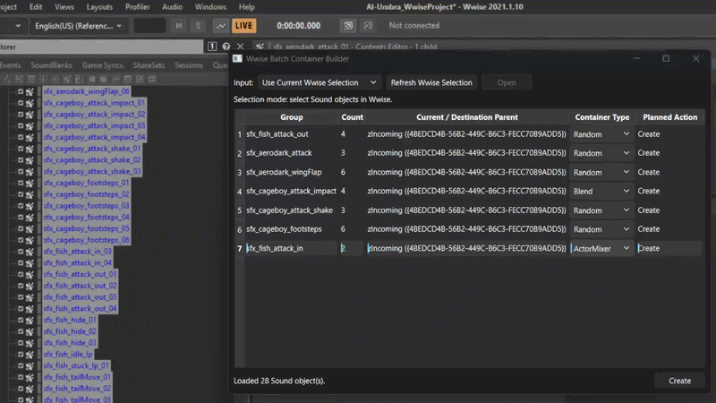

One of the most painful, time-consuming parts of working in Wwise is creating containers. This is especially true when the creative work and the implementation work are handled in separate chunks.
If I am creating sounds and implementing them in the same project, I might spend three days creating sounds and two days implementing them. Depending on the milestone, that can become a 3–2, 4–1, or even a 5–0 split. The numbers change, but the repetitive work remains: importing files, naming objects, creating parents, choosing container types, and moving everything into the right place.
I had always wanted to create a Wwise plug-in, but building a full plug-in is a large project. What I needed was a focused tool for my own workflow, so I built the Wwise Batch Container Builder using Python and WAAPI.
What the tool does
The tool takes either a selection of objects already inside Wwise or a folder of local WAV files. It detects naming patterns, groups related sounds, and creates the corresponding parent objects. The supported container types are Random Containers, Sequence Containers, Blend Containers, and Actor-Mixers.
For example, a set of sounds such as:
sfx_aerodark_attack_01
sfx_aerodark_attack_02
sfx_aerodark_attack_03becomes:
Actor-Mixer Hierarchy
└── sfx_aerodark_attack (Random Container)
├── sfx_aerodark_attack_01
├── sfx_aerodark_attack_02
└── sfx_aerodark_attack_03The trailing _<number> suffix is removed for grouping purposes, while the original sound names remain intact. The same process can organize another group, such as sfx_aerodark_wingFlap_01 through _03, under its own parent.
Workflow 1: Wwise objects
Before using this mode, Wwise must be open and WAAPI must be enabled.
- The UI calls
get_selected_objects()to read the current Wwise selection. - Objects that are not Sounds are ignored, and the UI reports how many objects were skipped.
- The selected Sounds are grouped by name using the naming engine.
- The table displays each group, its sound count, parent, container type, and planned action.
- The user can change the container-type combo box for each group.
- Pressing Create confirms the operation and sends the plan to the executor.
- The executor creates or reuses the containers and moves the Sounds by GUID.
This separation between reading, planning, previewing, and executing is important. It lets the user see what is about to happen before the project hierarchy is changed.
Workflow 2: WAV files
Important: before pressing Open, select exactly one Wwise object to use as the destination parent. The filesystem folder alone does not determine where the files will be imported.
- Change the input mode to Import WAV Files.
- Select a single Wwise parent object.
- Press Open and choose a folder.
- The tool loads the
.wavfiles directly inside that folder. Version 1 does not scan subfolders. - The files are grouped with the exact same naming engine used for Wwise objects.
- The tool validates that the files exist and that there are no duplicate paths.
- It calculates the container path and the future Sound SFX path.
- It checks for naming conflicts under an existing container.
- The executor creates or reuses the container and calls
ak.wwise.core.audio.import.
A planned import looks like this:
objectPath = "\\Actor-Mixer Hierarchy\\Default Work Unit\\sfx_attack\\<Sound SFX>sfx_attack_01"
imports = [{
"audioFile": "C:/Audio/sfx_attack_01.wav",
"objectPath": objectPath,
}]The import response contains information about the objects that were created. The program verifies that the response is valid and adds context to any errors by identifying both the group and the source file.
Preview first, execute second
The general flow is intentionally conservative:
- Read the selected Wwise objects or local audio files.
- Analyze the names and compare the strings.
- Group files or objects that belong together.
- Build a plan describing the parents, sounds, container types, and actions.
- Show that plan to the user.
- Execute the operation only after confirmation.
That preview is the part that makes the tool useful in a real project. Batch operations are powerful, but they are much safer when the intended result is visible before anything is created or moved.
Open source and future ideas
This project is done by a one-man band plus the help of a Codex agent, which brings me to the next thing: I’m releasing it under an open-source license, which means you can use it, modify it, and make it your own. Feel free to add any functionality you think might improve the tool (I’ve listed some ideas in the README.md) or report any bugs you find. And I promise I’ll take a look at them.

Explore the source code, workflow details, and future ideas for the tool.
VIEW ON GITHUB